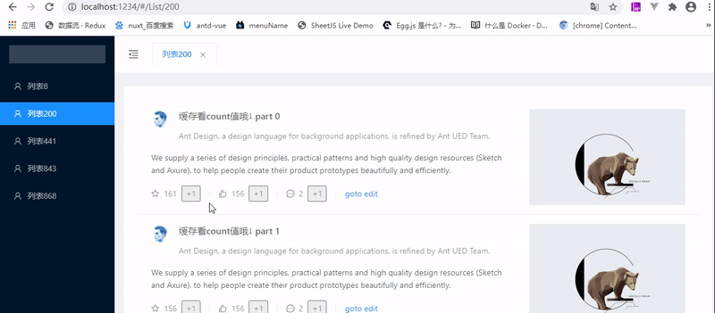
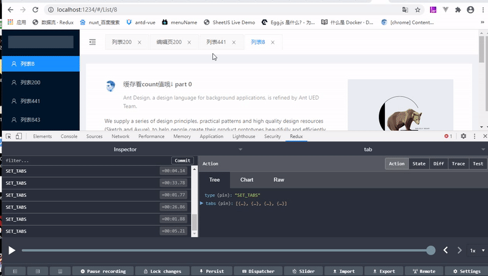

React实现数据驱动的tab页缓存
在开发后台管理页面的时候，会遇到缓存 Tab 页面数据的需求。在开发时也希望能够使用数组驱动的方式控制 Tab 页的缓存，并且使用 API 进一步控制 tab 页缓存或者其他页缓存。 之前关注的开发者新写了一个模块，正好满足了我的需求 react-activation:https://github.com/CJY0208/react-activation 原理应该是把 Alive 组件下的 dom 挂载到 Provider 组件的 display:none 的一个节点，当路由切回来时，在从 provider 中找之前挂在的 alive dom。作者已经帮我们实现了，用就是了。

用法
使用 react-activation 提供的 KeepAlive 组件包裹你的页面组件，控制 KeepAlive 的 when 值 作者提供了 demo：可关闭的路由 tabs 示例 但这个是 API 控制的，我更希望使用一个[]数据来驱动 tabs 和页面缓存
数据驱动
改变数据
使用 redux 管理这个数据，建立了一个 tabs 数组，我希望 tabs 和页面是否被缓存，都是响应这个数组。 我写了 2 个 action 去操作这个 tabs,新增,和删除
// 新增tab
export function pushTab({url,title}) {
const { tabs } = getState()
push(url)
// 在tabs没有的加上
if (tabs.findIndex(item => item.url === url) < 0) {
tabs.push({
url,
title
})
dispatch({
type: ActionTypes.SET_TABS,
tabs: tabs
})
}
}
// 关闭这个tab
export function removeTab({ url }) {
const { tabs } = getState()
let newTabs = tabs.filter(item => item.url !== url)
push(newTabs[newTabs.length - 1].url)
dispatch({
type: ActionTypes.SET_TABS,
tabs: newTabs
})
}
响应
然后我希望 redux 中的 tabs 的变化，能触发我的视图更新，用 React-Redux 提供的 connect 将 store 中的 tabs 绑定到组件上。当 tabs 发生变化时，我的缓存组件就能响应到，从而改变 keepAlive 的 when 值，实现缓存控制
import React from 'react'
import KeepAlive from 'react-activation'
import { connect } from 'react-redux'
export default function withAliveComponent(Component) {
// 包裹一层KeepAlive
const wrapAliveComponent = function (props) {
const id = props.location.pathname
// 当url存在与tabs数组中，保持缓存
return <KeepAlive id={id} when={props.tabs.findIndex(item => item.url === id) >= 0}>
<Component {...props} />
</KeepAlive>
}
// 绑定store中的tabs
return connect(state => {
return {
tabs: state.tabs
}
})(wrapAliveComponent)
}
更多 action
当组件已经能响应 tabs 的变化时，添加更多功能【关闭/关闭其他/关闭到右侧/关闭全部】，通过写不同的 action 操作 tabs 数组就可以了
